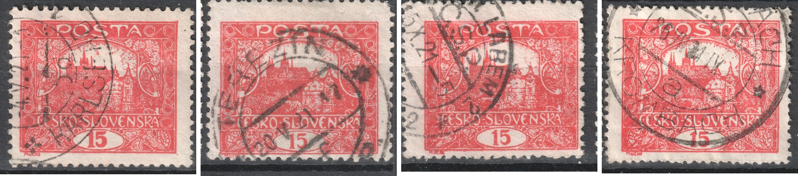
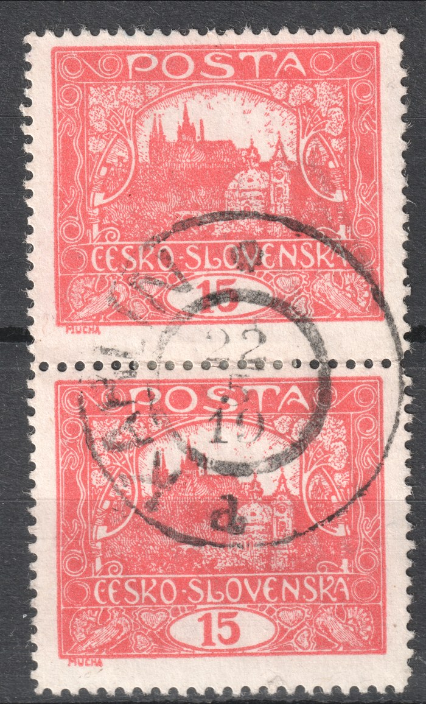

Matasellos con fecha fuera del periodo de validez de los Hradčany
La validez postal de la emisión Hradčany terminó el 30 de abril de 1921. Aun así, entre los sellos usados aparece de vez en cuando una pieza cuya fecha de matasellado queda fuera del periodo de validez: por lo general más allá de ese límite, excepcionalmente incluso antes de la emisión del sello. Esta página reúne tales hallazgos y se irá completando con nuevas piezas.
Bloque de cuatro 15 h de la 6.ª plancha, dentado C — «13. VI. 21»
La primera pieza documentada: un bloque de cuatro 15 h de la 6.ª plancha (posiciones 48, 49, 58 y 59), dentado lineal C. El matasellos con estrella y la indicación Č.S.P. — el nombre de la oficina es ilegible — lleva la fecha 13. VI. 21, es decir el 13 de junio de 1921, más de un mes después del fin de la validez.


¿Cómo interpretar una pieza así? La explicación más probable es una rueda de fecha mal ajustada en el matasellos: el empleado de correos cambió el año por error. Tales equivocaciones se conocen también en otras emisiones y, en un sello suelto sin su carta, no pueden descartarse ni confirmarse. Otras posibilidades son el matasellado tardío de un envío franqueado aún dentro del periodo de validez y la simple tolerancia del correo, que todavía aceptó el sello antiguo. Por regla general solo una carta permite decidir entre ellas: por su contenido, la tarifa pagada y el matasellos de llegada.
En los registros este bloque se trata como un error de ajuste del matasellos, es decir, se archiva bajo el año 1920 (junio); el periodo cubierto por el registro de matasellos fechados termina de todos modos en abril de 1921.
Cuatro piezas más: Karlovy Vary, Terezín, Ústí nad Labem, Krompach
Del mismo material proceden cuatro sellos sueltos de 15 h, esta vez con dentado lineal A y B. Los cuatro llevan en la rueda de fecha el año «21» y, por tanto, los cuatro quedan después del fin de la validez:
- Posición 56 / plancha V, dentado B, matasellos KARLSBAD con fecha 4. V. 21: apenas cuatro días después del fin de la validez.
- Posición 27 / plancha III, dentado B, matasellos TEREZÍN con fecha 20. V. 21.
- Posición 13 / plancha V, dentado B, matasellos ÚSTÍ N. LABEM 2 (Č.S.P.) con el mes X. 21; el día es ilegible.
- Posición 31 / plancha VI, dentado A, matasellos KROMBACH (Krompach, Č.S.P.) con fecha 26. VII. 21: la fecha más tardía de nuestros registros hasta ahora.

Para ellos vale lo mismo que para el bloque de cuatro de arriba: sin la carta no puede decidirse si la rueda de fecha estaba mal ajustada o si el sello se usó realmente tarde; en el caso del matasellos de Karlovy Vary, solo unos días después del 30 de abril, la tolerancia de la oficina de correos es muy concebible. En los registros se tratan como el bloque, es decir, se archivan bajo el año 1920, y Terezín y Krompach figuran con ese mismo criterio en el mapa de matasellos. Las demás piezas con fecha posterior al 30 de abril de 1921 se irán añadiendo aquí.
El caso contrario: una fecha anterior a la emisión del sello — Karlín «22. V. 19»
Una rueda de fecha mal ajustada también puede desplazar la fecha en sentido contrario. Una pareja vertical de 15 h de la plancha 5 (posiciones 18 y 28), dentado lineal C, lleva un matasellos KARLÍN (letra distintiva «d») con fecha 22. V. 19. Pero el valor de 15 h no llegó a las ventanillas hasta junio de 1919 (el uso documentado más temprano es el 24 de junio de 1919, en un sello sin dentar de las planchas 1–2), y el dentado C en las planchas 5 y 6 no está documentado antes de febrero de 1920. La fecha queda, pues, más de un año antes del primer uso posible, y aquí el error de ajuste es la única explicación: la fecha real será el 22 de mayo de 1920, y así figura la pareja en los registros.
